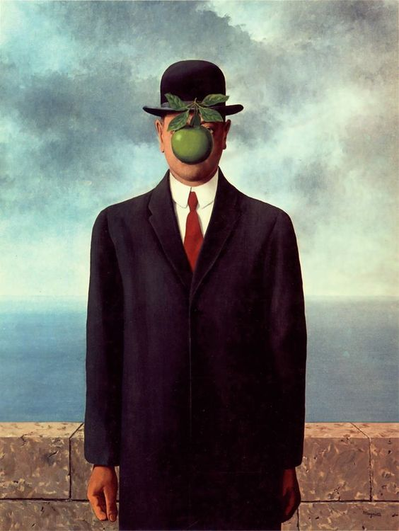

Rene Magritte was a Belgian artist most associated with Surrealism. He was born in 1898 in Belgium. His work is very repetitive, produce unsettling thoughts through their clarity and simplicity. The men in his works can be attributed as a self-portrait. He began to paint in 1915 and enrolled in the Academie des Beaux-Arts in Brussels. He paints everyday objects in an unusual way to provoke what is taken for granted. There Magritte was introduced to Futurism, Cubism, and Purism. He works in creating commercial art becoming a freelancer design and designing posters. In his last years he was diagnosed with pancreatic cancer. During this time, he also explored making series of short films that featured his wife, and sculpture. He died in August 15, 1967. Magritte’s works influenced Pop, Conceptualism, and paintings of the 1980s. Andy Warhol was influenced by Magritte. Today Magritte’s work is well known and celebrated.
